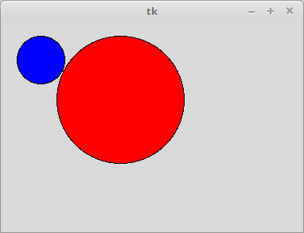
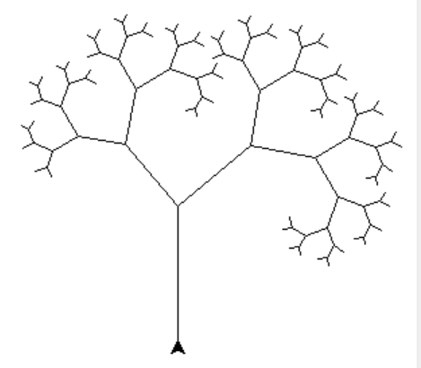
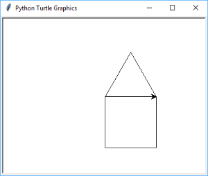
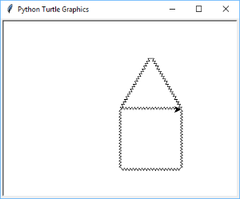
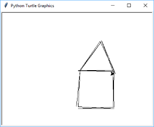
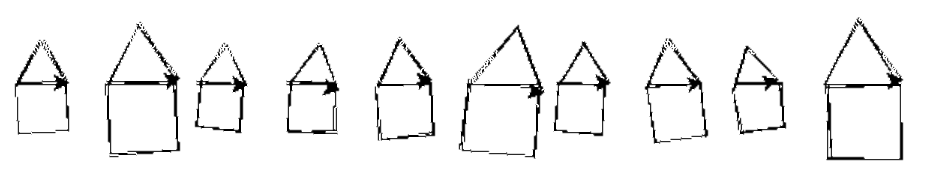
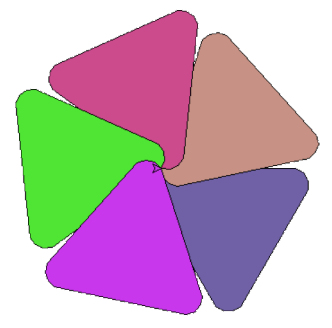

13. Triedy a dedičnosť¶
Čo už vieme o triedach a ich inštanciách:
triedy sú kontajnery atribútov:
atribúty sú väčšinou funkcie, hovoríme im metódy
niekedy sú to premenné, hovoríme im triedne atribúty
niektoré metódy sú „magické“: začínajú aj končia dvomi znakmi
__a každá z nich má pre Python svoje špeciálne využitie
triedy sú vzormi na vytvárame inštancií (niečo ako formičky na vyrábanie nejakých výrobkov)
aj inštancie sú kontajnery atribútov:
väčšinou sú to súkromné premenné inštancií
ak nejaký atribút nie je v inštancii definovaný, tak Python zabezpečí, že sa použije atribút z triedy (inštancia automaticky „vidí“ triedne atribúty) - samozrejme, len ak tam existuje, inak sa o tom vyhlási chyba
Objektové programovanie
je v programovacom jazyku charakterizované týmito tromi vlastnosťami:
1. Zapuzdrenie
Zapuzdrenie (enkapsulácia, encapsulation) označuje:
v objekte sa nachádzajú premenné (atribúty) aj metódy, ktoré s týmito premennými pracujú (hovoríme, že údaje a funkcie sú zapuzdrené v jednom celku)
vďaka metódam môžeme premenné v objekte ukryť tak, že zvonku sa s údajmi bude pracovať len pomocou týchto metód
2. Dedičnosť
Dedičnosť (inheritance) označuje, že
novú triedu nevytvárame z nuly, ale využijeme už nejakú existujúcu triedu
tejto vlastnosti sa budeme venovať v tejto prednáške
3. Polymorfizmus
Tejto vlastnosti objektového programovania sa budeme venovať až v ďalšej prednáške.
Zapuzdrenie¶
Pripomeňme si triedu Kruh: v atribútoch x, y, r a farba sú hodnoty, ktoré presne zodpovedajú vykreslenému objektu:
import tkinter
class Kruh:
canvas = tkinter.Canvas()
canvas.pack()
def __init__(self, x, y, r, farba='red'):
self.x, self.y, self.r = x, y, r
self.farba = farba
self.id = self.canvas.create_oval(
self.x - self.r, self.y - self.r,
self.x + self.r, self.y + self.r,
fill=farba)
def __str__(self):
return f'Kruh({self.x}, {self.y}, {self.r}, {self.farba!r})'
def posun(self, dx=0, dy=0):
self.x += dx
self.y += dy
self.canvas.move(self.id, dx, dy)
def zmen(self, r):
self.r = r
self.canvas.coords(self.id,
self.x - self.r, self.y - self.r,
self.x + self.r, self.y + self.r)
def prefarbi(self, farba):
self.farba = farba
self.canvas.itemconfig(self.id, fill=farba)
k1 = Kruh(50, 50, 30, 'blue')
k2 = Kruh(150, 100, 80)
Dostávame:
{kind=link}

Ak by sme teraz s atribútmi inštancií pracovali priamo mimo metód, mohli by sme byť prekvapení, ako to nefunguje. Napríklad, zmeníme atribúty r a farba:
>>> k1.r = 100
>>> k2.farba = 'green'
>>> print(k1)
Kruh(50, 50, 100, 'blue')
>>> print(k2)
Kruh(150, 100, 80, 'green')
Niečo iné je v atribútoch a niečo iné vidíme v canvase (obrázok sa vôbec nezmenil). Aby sme korektne menili atribúty aj mimo metód, programátorom sa odporúča zadefinovať sadu metód, ktoré pri zmene hodnoty zároveň urobia aj ďalšie akcie. Tu by sa hodilo, aby sme ku každému atribútu (ktorý dovolíme zmeniť) vytvorili zodpovedajúcu metódu na zmenu. Zapíšme:
class Kruh:
canvas = tkinter.Canvas()
canvas.pack()
def __init__(self, x, y, r, farba='red'):
self.x, self.y, self.r = x, y, r
self.farba = farba
self.id = self.canvas.create_oval(
self.x - self.r, self.y - self.r,
self.x + self.r, self.y + self.r,
fill=farba)
def __str__(self):
return f'Kruh({self.x}, {self.y}, {self.r}, {self.farba!r})'
def posun(self, dx=0, dy=0):
self.x += dx
self.y += dy
self.canvas.move(self.id, dx, dy)
def zmen_r(self, r):
self.r = r
self.canvas.coords(self.id,
self.x - self.r, self.y - self.r,
self.x + self.r, self.y + self.r)
def zmen_farba(self, farba):
self.farba = farba
self.canvas.itemconfig(self.id, fill=farba)
def zmen_x(self, x):
self.x = x
self.canvas.coords(self.id,
self.x - self.r, self.y - self.r,
self.x + self.r, self.y + self.r)
def zmen_y(self, y):
self.y = y
self.canvas.coords(self.id,
self.x - self.r, self.y - self.r,
self.x + self.r, self.y + self.r)
a môžeme to použiť, napríklad takto:
>>> k1.zmen_x(80)
>>> k1.zmen_r(100)
>>> k2.zmen_farba('green')
>>> k2.zmen_y(130)
Takéto riešenie je už na dobrej ceste, ale ešte stále sa programátor môže pomýliť a napíše:
>>> k2.r = 50
To znamená, že zmení nejaký atribút priamo bez našej metódy. Tu sa v takýchto prípadoch odporúča označiť takéto kritické atribúty ako nie verejné, tzv. súkromné tak, že budú začínať jedným znakom podčiarkovník. Programátor dáva takto najavo, že tieto atribúty by sa nemali používať mimo metód, lebo by to mohlo mať zlé dôsledky. Preto okrem metód, ktoré korektne menia atribúty (budeme im hovoriť setter), napríklad zmen_r alebo zmen_farba, zadefinujeme metódy, ktoré vrátia hodnoty týchto atribútov (aby sme nepoužívali identifikátory začínajúce znakom podčiarkovník _). Takýmto metódam budeme hovoriť getter.
Prepíšme triedu Kruh tak, aby v nej boli pre všetky atribúty definované metódy setter aj getter:
class Kruh:
canvas = tkinter.Canvas()
canvas.pack()
def __init__(self, x, y, r, farba='red'):
self._x, self._y, self._r = x, y, r
self._farba = farba
self._id = self.canvas.create_oval(
self._x - self._r, self._y - self._r,
self._x + self._r, self._y + self._r,
fill=farba)
def __str__(self):
return f'Kruh({self._x}, {self._y}, {self._r}, {self._farba!r})'
def posun(self, dx=0, dy=0):
self._x += dx
self._y += dy
self.canvas.move(self._id, dx, dy)
def zmen_r(self, r): # setter
self._r = r
self.canvas.coords(self._id,
self._x - self._r, self._y - self._r,
self._x + self._r, self._y + self._r)
def zmen_farba(self, farba): # setter
self._farba = farba
self.canvas.itemconfig(self._id, fill=farba)
def zmen_x(self, x): # setter
self._x = x
self.canvas.coords(self._id,
self._x - self._r, self._y - self._r,
self._x + self._r, self._y + self._r)
def zmen_y(self, y): # setter
self._y = y
self.canvas.coords(self._id,
self._x - self._r, self._y - self._r,
self._x + self._r, self._y + self._r)
def daj_r(self): # getter
return self._r
def daj_farba(self): # getter
return self._farba
def daj_x(self): # getter
return self._x
def daj_y(self): # getter
return self._y
Pozrite, ako môžeme teraz korektne pracovať s atribútmi:
>>> k1.zmen_x(k1.daj_x() + 10)
>>> k2.zmen_r(k2.daj_r() - 10)
>>> k2.r
...
AttributeError: 'Kruh' object has no attribute 'r'
Property¶
Keďže takýto zápis robí naše programy výrazne horšie čitateľné (oproti zápisu k1.x = k1.x + 10), Python ponúka špeciálne využitie getter-ov a setter-ov. V triede môžeme okrem definícií takýchto metód zadefinovať aj špeciálny atribút, tzv. property:
class Kruh:
canvas = tkinter.Canvas()
canvas.pack()
def __init__(self, x, y, r, farba='red'):
self._x, self._y, self._r = x, y, r
self._farba = farba
self._id = self.canvas.create_oval(
self._x - self._r, self._y - self._r,
self._x + self._r, self._y + self._r,
fill=farba)
def __str__(self):
return f'Kruh({self._x}, {self._y}, {self._r}, {self._farba!r})'
def posun(self, dx=0, dy=0):
self._x += dx
self._y += dy
self.canvas.move(self._id, dx, dy)
def zmen_r(self, r):
self._r = r
self.canvas.coords(self._id,
self._x - self._r, self._y - self._r,
self._x + self._r, self._y + self._r)
def zmen_farba(self, farba):
self._farba = farba
self.canvas.itemconfig(self._id, fill=farba)
def zmen_x(self, x):
self._x = x
self.canvas.coords(self._id,
self._x - self._r, self._y - self._r,
self._x + self._r, self._y + self._r)
def zmen_y(self, y):
self._y = y
self.canvas.coords(self._id,
self._x - self._r, self._y - self._r,
self._x + self._r, self._y + self._r)
def daj_r(self):
return self._r
def daj_farba(self):
return self._farba
def daj_x(self):
return self._x
def daj_y(self):
return self._y
x = property(daj_x, zmen_x)
y = property(daj_y, zmen_y)
r = property(daj_r, zmen_r)
farba = property(daj_farbu, zmen_farbu)
Pribudli nám tu štyri priradenia. Už vieme, že priradenia pri definovaní triedy, vytvárajú triedne atribúty. V našom prípade sa vytvoril, napríklad triedny atribút x, ktorého hodnotou je špeciálna dvojica getter daj_x a setter zmen_x. Odteraz Python vie, že pri práci s inštanciou nebude meniť, resp. získavať atribút x bežným spôsobom, ale volaním zodpovedajúcich metód. Python teraz vie, že to nie sú skutočné atribúty premenné, ale sú to len zamaskované volania metód getter a setter. Teraz môžeme zapísať aj toto:
>>> k1.x = k1.x + 150
>>> k2.farba = 'indian' + k2.farba
>>> k2.r /= 2
Toto isté môžete v Pythone zapísať aj takto:
class Kruh:
canvas = tkinter.Canvas()
canvas.pack()
def __init__(self, x, y, r, farba='red'):
self._x, self._y, self._r = x, y, r
self._farba = farba
self._id = self.canvas.create_oval(
self._x - self._r, self._y - self._r,
self._x + self._r, self._y + self._r,
fill=farba)
def __str__(self):
return f'Kruh({self._x}, {self._y}, {self._r}, {self._farba!r})'
def posun(self, dx=0, dy=0):
self._x += dx
self._y += dy
self.canvas.move(self._id, dx, dy)
@property
def r(self):
return self._r
@r.setter
def r(self, r):
self._r = r
self.canvas.coords(self._id,
self._x - self._r, self._y - self._r,
self._x + self._r, self._y + self._r)
@property
def farba(self):
return self._farba
@farba.setter
def farba(self, farba):
self._farba = farba
self.canvas.itemconfig(self._id, fill=farba)
@property
def x(self):
return self._x
@x.setter
def x(self, x):
self._x = x
self.canvas.coords(self._id,
self._x - self._r, self._y - self._r,
self._x + self._r, self._y + self._r)
@property
def y(self):
return self._y
@y.setter
def y(self, y):
self._y = y
self.canvas.coords(self._id,
self._x - self._r, self._y - self._r,
self._x + self._r, self._y + self._r)
V tomto zápise obe metódy getter aj setter majú rovnaké mená a zhodujú sa s menom property atribútu. Pred každú definíciu triedy sme teraz museli pridať tzv. dekorátor buď @property pre definovanie getter alebo @r.setter pre definovanie setter. Je na vás, ktorú z týchto verzií zápisu použijete. Pre začiatočníkov sa odporúča prvá verzia (s priradeniami typu r = property(daj_r, zmen_r)), prípadne property zatiaľ vo svojich triedach nedefinujte.
Dedičnosť¶
Začneme definíciou jednoduchej triedy:
class Bod:
def __init__(self, x, y):
self.x, self.y = x, y
def __str__(self):
return f'Bod({self.x}, {self.y})'
def posun(self, dx=0, dy=0):
self.x += dx
self.y += dy
bod = Bod(100, 50)
bod.posun(-10, 40)
print('bod =', bod)
Toto by nemalo byť pre nás nič nové. Tiež sme sa už stretli s tým, že:
>>> dir(Bod)
['__class__', '__delattr__', '__dict__', '__dir__', '__doc__', '__eq__', '__format__',
'__ge__', '__getattribute__', '__gt__', '__hash__', '__init__', '__le__', '__lt__',
'__module__', '__ne__', '__new__', '__reduce__', '__reduce_ex__', '__repr__',
'__setattr__', '__sizeof__', '__str__', '__subclasshook__', '__weakref__', 'posun']
V tomto výpise všetkých atribútov triedy Bod vidíme nielen nami definované tri metódy: __init__, __str__ a posun, ale aj veľké množstvo neznámych identifikátorov, o ktorých asi netušíme odkiaľ sa tu nabrali a na čo slúžia.
V Pythone, keď vytvárame novú triedu, tak sa táto „nenarodí“ úplne prázdna, ale získava niektoré dôležité atribúty od základnej Pythonovskej triedy object. Keď pri definovaní triedy zapíšeme:
class Bod:
...
v skutočnosti to znamená:
class Bod(object):
...
Do okrúhlych zátvoriek píšeme triedu (v tomto prípade triedu object), z ktorej sa vytvára naša nová trieda Bod. Vďaka tomuto naša nová trieda už pri „narodení“ pozná základnú množinu atribútov a my našimi definíciami metód tieto atribúty buď prepisujeme alebo pridávame nové. Tomuto mechanizmu sa hovorí dedičnosť a znamená to, že z existujúcej triedy vytvárame nejakú novú:
triede, z ktorej vytvárame nejakú novú, sa hovorí základná trieda, alebo bázová trieda, alebo super trieda (base class, super class)
triede, ktorá vznikne dedením z inej triedy, hovoríme odvodená trieda, alebo podtrieda (derived class, subclass)
Niekedy sa vzťahu základná trieda a odvodená trieda hovorí aj terminológiou rodič a potomok (potomok zdedil nejaké vlastnosti od svojho rodiča).
Odvodená trieda¶
Vytvorme nový typ (triedu) z triedy, ktorú sme definovali my, napríklad z triedy Bod vytvoríme novú triedu FarebnyBod:
class FarebnyBod(Bod):
def zmen_farbu(self, farba):
self.farba = farba
Vďaka takémuto zápisu trieda FarebnyBod získava už pri narodení metódy __init__, __str__ a posun, pritom metódu zmen_farbu sme jej dodefinovali teraz. Teda môžeme využívať všetko z definície triedy, z ktorej sme odvodili novú triedu (t.j. všetky atribúty, ktoré sme zdedili). Môžeme teda zapísať:
fbod = FarebnyBod(200, 50) # volá __init__ z triedy Bod
fbod.zmen_farbu('red') # volá zmen_farbu z triedy FarebnyBod
fbod.posun(dy=50) # volá posun z triedy Bod
print('fbod =', fbod) # volá __str__ z triedy Bod
Zdedené metódy môžeme v novej triede nielen využívať, ale aj predefinovať - napríklad môžeme zmeniť inicializáciu __init__:
class FarebnyBod(Bod):
def __init__(self, x, y, farba='black'):
self.x = x
self.y = y
self.farba = farba
def zmen_farbu(self, farba):
self.farba = farba
fbod = FarebnyBod(200, 50, 'green')
fbod.posun(dy=50)
print('fbod =', fbod)
Pôvodná verzia inicializačnej metódy __init__ z triedy Bod sa teraz prekryla novou verziou tejto metódy, ktorá má teraz už tri parametre. Ak by sme v metóde __init__ chceli využiť pôvodnú verziu tejto metódy zo základnej triedy Bod, môžeme ju z tejto metódy zavolať, ale nesmieme to urobiť takto:
class FarebnyBod(Bod):
def __init__(self, x, y, farba='black'):
self.__init__(x, y) # !!! chybné volanie !!!
self.farba = farba
...
Toto je totiž rekurzívne volanie, ktoré spôsobí spadnutie programu RecursionError: maximum recursion depth exceeded. Musíme to zapísať takto:
class FarebnyBod(Bod):
def __init__(self, x, y, farba='black'):
Bod.__init__(self, x, y) # inicializácia zo základnej triedy
self.farba = farba
...
T.j. pri inicializácii inštancie triedy FarebnyBod najprv použi inicializáciu ako keby to bola inicializácia základnej triedy Bod (inicializuje atribúty x a y) a potom ešte inicializuj niečo navyše - t.j. atribút farba. Dá sa to zapísať ešte univerzálnejšie:
class FarebnyBod(Bod):
def __init__(self, x, y, farba='black'):
super().__init__(x, y)
self.farba = farba
...
Štandardná funkcia super() na tomto mieste označuje: urob tu presne to, čo by na tomto mieste urobil môj rodič (t.j. moja super trieda). Tento zápis uvidíme aj v ďalších ukážkach.
Grafické objekty
Trochu sme upravili grafické triedy Kruh, Obdlznik a Skupina zo začiatku prednášky (bez property) aj z prednášky: 12. Moduly, triedy a metódy:
import tkinter
class Kruh:
canvas = None
def __init__(self, x, y, r, farba='red'):
self._x, self._y, self._r = x, y, r
self._farba = farba
self._id = self.canvas.create_oval(x-r, y-r, x+r, y+r, fill=farba)
def __str__(self):
return f'Kruh({self._x}, {self._y}, {self._r}, {self._farba!r})'
def posun(self, dx, dy):
self._x += dx
self._y += dy
self.canvas.move(self._id, dx, dy)
def zmen_r(self, r):
self._r = r
self.canvas.coords(self._id,
self._x - self._r, self._y - self._r,
self._x + self._r, self._y + self._r)
def zmen_farbu(self, farba):
self._farba = farba
self.canvas.itemconfig(self._id, fill=farba)
class Obdlznik:
canvas = None
def __init__(self, x, y, sirka, vyska, farba='red'):
self._x, self._y, self._sirka, self._vyska = x, y, sirka, vyska
self._farba = farba
self._id = self.canvas.create_rectangle(x, y, x+sirka, y+sirka, fill=farba)
def __str__(self):
return f'Obdlznik({self._x}, {self._y}, {self._sirka}, {self._vyska}, {self._farba!r})'
def posun(self, dx, dy):
self._x += dx
self._y += dy
self.canvas.move(self._id, dx, dy)
def zmen_velkost(self, sirka, vyska):
self._sirka, self._vyska = sirka, vyska
self.canvas.coords(self._id,
self._x, self._y,
self._x + self._sirka, self._y + self._vyska)
def zmen_farbu(self, farba):
self._farba = farba
self.canvas.itemconfig(self._id, fill=farba)
class Skupina:
def __init__(self):
self._zoznam = []
def pridaj(self, utvar):
self._zoznam.append(utvar)
def posun(self, dx, dy):
for utvar in self._zoznam:
utvar.posun(dx, dy)
def posun_typ(self, dx, dy, typ):
for utvar in self._zoznam:
if type(utvar) == typ:
utvar.posun(dx, dy)
def zmen_farbu(self, farba):
for utvar in self._zoznam:
utvar.zmen_farbu(farba)
def zmen_farbu_typ(self, farba, typ):
for utvar in self._zoznam:
if type(utvar) == typ:
utvar.zmen_farbu(farba)
#----------------------------------------
c = Kruh.canvas = Obdlznik.canvas = tkinter.Canvas()
c.pack()
k = Kruh(50, 50, 30, 'blue')
r = Obdlznik(100, 20, 100, 50)
k.zmen_farbu('green')
r.posun(50, 0)
Všimnite si:
zrušili sme triedny atribút
typ, pomocou ktorého metódyposun_typazmen_farbu_typvedeli pracovať len s objektmi daného typu - namiesto toho teraz testujeme samotnú inštanciu pomocou funkcietype- tá nám vráti buď typKruhaleboObdlznikobe triedy
KruhajObdlznikmajú niektoré atribúty aj metódy úplne rovnaké (napríkladx,y,farba,posun,zmen_farbu)ak by sme chceli využiť dedičnosť (jedna trieda zdedí nejaké atribúty a metódy od inej), nie je rozumné, aby
Kruhniečo dedil z triedyObdlznik, alebo naopakObdlznikbol odvodený z triedyKruh
Zadefinujeme preto novú triedu Utvar, ktorá bude predkom (rodičom, bude základnou triedou) oboch tried Kruh aj Obdlznik - táto trieda bude obsahovať všetky spoločné atribúty týchto tried, t.j. aj niektoré metódy:
class Utvar:
canvas = tkinter.Canvas(width=400, height=400)
canvas.pack()
def __init__(self, x, y, farba='red'):
self._x, self._y, self._farba = x, y, farba
self._id = None
def posun(self, dx, dy):
self._x += dx
self._y += dy
self.canvas.move(self._id, dx, dy)
def zmen_farbu(self, farba):
self._farba = farba
self.canvas.itemconfig(self._id, fill=farba)
Uvedomte si, že nemá zmysel vytvárať objekty tejto triedy, lebo okrem inicializácie zvyšné metódy nebudú fungovať. Teraz dopíšme triedy Kruh a Obdlznik:
class Kruh(Utvar):
def __init__(self, x, y, r, farba='red'):
super().__init__(x, y, farba)
self._r = r
self._id = self.canvas.create_oval(x - r, y - r, x + r, y + r, fill=farba)
def zmen_r(self, r):
self._r = r
self.canvas.coords(self._id,
self._x - self._r, self._y - self._r,
self._x + self._r, self._y + self._r)
class Obdlznik(Utvar):
def __init__(self, x, y, sirka, vyska, farba='red'):
super().__init__(x, y, farba)
self._sirka, self._vyska = sirka, vyska
self._id = self.canvas.create_rectangle(x, y, x + sirka, y + sirka, fill=farba)
def zmen_velkost(self, sirka, vyska):
self._sirka, self._vyska = sirka, vyska
self.canvas.coords(self._id,
self._x, self._y,
self._x + self._sirka, self._y + self._vyska)
Zrušili sme atribút canvas, ktorý sa nachádzal v každej z tried Kruh a Obdlznik. Teraz sa tento atribút nachádza iba v základnej triede Utvar a obe odvodené triedy ho vidia.
Testovanie typu inštancie¶
Pomocou štandardnej funkcie type vieme otestovať, či je inštancia konkrétneho typu, napríklad
>>> t1 = Kruh(10, 20, 30)
>>> t2 = Obdlznik(40, 50, 60, 70)
>>> type(t1) == Kruh
True
>>> type(t2) == Kruh
False
>>> type(t2) == Obdlznik
True
>>> type(t1) == Utvar
False
Okrem tohto testu môžeme použiť štandardnú funkciu isinstance(i, t), ktorá zistí, či je inštancia i typu t alebo je typom niektorého jeho predka, preto budeme radšej písať:
>>> t1 = Kruh(10, 20, 30)
>>> t2 = Obdlznik(40, 50, 60, 70)
>>> isinstance(t1, Kruh)
True
>>> isinstance(t1, Utvar)
True
>>> isinstance(t2, Kruh)
False
>>> isinstance(t2, Utvar)
True
Môžeme teraz prepísať metódy posun_typ a prefarbi_typ triedy Skupina takto:
class Skupina:
def __init__(self):
self._zoznam = []
def pridaj(self, utvar):
self._zoznam.append(utvar)
def posun(self, dx, dy):
for utvar in self._zoznam:
utvar.posun(dx, dy)
def posun_typ(self, dx, dy, typ):
for utvar in self._zoznam:
if isinstance(utvar, typ):
utvar.posun(dx, dy)
def zmen_farbu(self, farba):
for utvar in self._zoznam:
utvar.zmen_farbu(farba)
def zmen_farbu_typ(self, farba, typ):
for utvar in self._zoznam:
if isinstance(utvar, typ):
utvar.zmen_farbu(farba)
Keď porovnáme metódy posun a posun_typ, líšia sa len podmieneným príkazom if. Ale ak zavoláme sk.posun_typ(5, 10, Utvar), dostávame rovnaký efekt ako sk.posun(5, 10). Preto môžeme obe metódy zlúčiť do jednej (podobne aj dvojicu zmen_farbu a zmen_farbu_typ):
class Skupina:
def __init__(self):
self._zoznam = []
def pridaj(self, utvar):
self._zoznam.append(utvar)
## def posun(self, dx, dy):
## for utvar in self._zoznam:
## utvar.posun(dx, dy)
def posun(self, dx, dy, typ=Utvar):
for utvar in self._zoznam:
if isinstance(utvar, typ):
utvar.posun(dx, dy)
## def zmen_farbu(self, farba):
## for utvar in self._zoznam:
## utvar.zmen_farbu(farba)
def zmen_farbu(self, farba, typ=Utvar):
for utvar in self._zoznam:
if isinstance(utvar, typ):
utvar.zmen_farbu(farba)
Použiť takto:
import random
def pridaj():
for i in range(20):
if random.randrange(2):
sk.pridaj(Kruh(random.randint(50, 350), random.randint(50, 350),
random.randint(10, 25)))
else:
sk.pridaj(Obdlznik(random.randint(50, 350), random.randint(50, 350),
random.randint(10, 50), random.randint(10, 50)))
def zmen1():
sk.zmen_farbu(f'#{random.randrange(256**3):06x}')
sk.posun(2, 5)
def zmen2():
sk.zmen_farbu('yellow', Kruh)
sk.posun(-10, -25, Obdlznik)
tkinter.Button(text='pridaj', command=pridaj).pack()
tkinter.Button(text='zmen1', command=zmen1).pack()
tkinter.Button(text='zmen2', command=zmen2).pack()
sk = Skupina()
volanie
zmen_farbu(..., Kruh)zmení farbu všetkých kruhov v skupine na žltúvolanie
posun(..., Obdlznik)posunie len všetky obdĺžniky
Odvodená trieda od Turtle¶
Aj od triedy Turtle z prednášky: 11. Slovníky a množiny môžeme odvádzať nové triedy, napríklad:
import turtle
class MojaTurtle(turtle.Turtle):
pass
t = MojaTurtle()
for i in range(5):
t.fd(100)
t.lt(144)
Zadefinovali sme novú triedu MojaTurtle, ktorá je odvodená od triedy Turtle (z modulu turtle, preto musíme písať turtle.Turtle) a keďže sme do nej nedodefinovali nič nové, táto naša trieda dokáže presne to isté ako turtle.Turtle. Aj inštancia odvodená z obyčajnej turtle.Turtle dokáže robiť len to, čo táto základná trieda.
Zadefinujme teraz triedu MojaTurtle tak, aby jej kolekcia metód bola rozšírená o metódu stvorec:
import turtle
class MojaTurtle(turtle.Turtle):
def stvorec(self, velkost):
for i in range(4):
self.fd(velkost)
self.rt(90)
t = MojaTurtle()
t.stvorec(100)
t.lt(30)
t.stvorec(200)
Samozrejme, že túto metódu môžu volať len korytnačky typu MojaTurtle, obyčajné korytnačky pri takomto volaní metódy stvorec hlásia chybu:
>>> t0 = turtle.Turtle()
>>> t0.stvorec(50)
...
AttributeError: 'Turtle' object has no attribute 'stvorec'
Tu si môžete otestovať, ako rozumiete volaniam metód a skúste to zavolať takto:
>>> MojaTurtle.stvorec(t0, 50)
Takto to ale používať nebudeme!
Môžeme definovať aj zložitejšie metódy, napríklad aj rekurzívny strom:
import turtle
class MojaTurtle(turtle.Turtle):
def strom(self, d):
self.fd(d)
if d > 10:
self.lt(40)
self.strom(d * .6)
self.rt(90)
self.strom(d * .7)
self.lt(50)
self.fd(-d)
t = MojaTurtle()
t.lt(90)
t.strom(100)
{kind=link}

Niekedy nám môže chýbať to, že trieda Turtle neumožňuje vytvoriť korytnačku inde ako v strede plochy. Predefinujme inicializáciu našej novej korytnačky a zároveň sme tu zadefinujme metódu domcek, ktorá nakreslí domček zadanej veľkosti:
import turtle
class MojaTurtle(turtle.Turtle):
def __init__(self, x=0, y=0):
super().__init__()
self.speed(0)
self.teleport(x, y) # pu(); setpos(x, y); pd()
def domcek(self, dlzka):
for uhol in 90, 90, 90, 30, 120, -60:
self.fd(dlzka)
self.rt(uhol)
t = MojaTurtle(-200, 100)
t.domcek(100)
{kind=link}

Do triedy MojaTurtle dodefinujme aj metódu fd. Zrejme chceme prekryť existujúcu metódu fd z pôvodnej triedy turtle.Turtle našou vlastnou verziou. Zapíšme metódu fd, ktorá namiesto rovnej čiary nakreslí „cikcakovú“ a pritom skončí v rovnakom bode, ako pôvodná čiara tejto dĺžky:
import turtle
class MojaTurtle(turtle.Turtle):
def __init__(self, x=0, y=0):
super().__init__()
self.speed(0)
self.teleport(x, y)
def domcek(self, dlzka):
for uhol in 90, 90, 90, 30, 120, -60:
self.fd(dlzka)
self.rt(uhol)
def fd(self, dlzka):
while dlzka >= 5:
self.lt(60)
super().fd(5)
self.rt(120)
super().fd(5)
self.lt(60)
dlzka -= 5
super().fd(dlzka)
Otestujeme:
>>> t = MojaTurtle()
>>> t.fd(300)
Korytnačka naozaj prešla vzdialenosť 300, ale zanechala pritom „cikcakovú“ čiaru. Ak otestujeme namiesto jednej čiary nakreslenie domčeka:
>>> t = MojaTurtle()
>>> t.domcek(100)
Dostávame domček s „cikcakovými“ čiarami:
{kind=link}

Zmeňme cikcakové čiary na trochu náhodné:
import turtle
import random
class MojaTurtle(turtle.Turtle):
...
def fd(self, dlzka):
super().fd(dlzka)
self.rt(180 - random.randint(-3, 3))
super().fd(dlzka)
self.rt(180 - random.randint(-3, 3))
super().fd(dlzka)
Domček teraz vyzerá takto:
MojaTurtle().domcek(100)
{kind=link}

Metóda fd namiesto jednej rovnej čiary danej dĺžky, nakreslí tri čiary tejto dĺžky, pričom sa zakaždým otočí o 180 stupňov plus nejaká malá náhodná odchýlka <-3, 3> stupne. Vďaka tejto odchýlke môže vzniknúť taký efekt, akokeby kresba domčeka vznikla kreslením od ruky
Zapis MojaTurtle().domcek(100) označuje, že najprv vytvoríme novú inštanciu MojaTurtle(), ale namiesto toho, aby sme ju priradili do nejakej premennej, napríklad t = MojaTurtle() a s ňou ďalej pracovali, napríklad t.domcek(100), tak sme priamo bez priradenia zavolali danú metódu. Toto sa zvykne robiť vtedy, keď inštanciu potrebujeme len na jedno zavolanie jej metódy a nepredpokladáme, že budeme potrebovať premennú na prístup k tejto inštancii.
Cvičenie¶
Poznámka
riešenia úloh ulož do jedného súboru a odovzdaj na testovací server https://vektor.fmph.uniba.sk/
testovací server tieto ulohy nebude testovať, vyrieš a odovzdaj ich všetky okrem tých, ktoré sú označené znakom -
prvé tri riadky súboru s riešením musia obsahovať:
# 13. cvicenie # student: Janko Hrasko # datum: 6.11.2025
zrejme ako študenta uvedieš svoje meno.
v odovzdaných riešeniach používaj len konštrukcie z doterajších prednášok (nepoužívaj
global)
- Zisti, ako fungujú tieto triedy. Skús najprv bez počítača, potom skontroluj na počítači:
class Zviera: def __init__(self, meno): self.meno = meno.capitalize() def __str__(self): return f'zviera {self.typ} má meno {self.meno} a robí {self.zvuk}' class Pes(Zviera): typ = 'pes' zvuk = 'haf-haf' class Macka(Zviera): typ = 'mačka' zvuk = 'mnau-mnau' class Kacka(Zviera): typ = 'kačka' zvuk = 'ga-ga' z1 = Pes('dunčo') z2 = Macka('mica') z3 = Pes('bono') z4 = Kacka('gréta') z3.zvuk = 'vrr-vrr' for z in z1, z2, z3, z4: print(type(z), z)
Atribúty
meno,typazvukprerob na property:najprv ich všetky premenuj tak, aby začínali znakom podčiarkovník
v triede
Zvierapre všetky z nich zadefinuj zodpovedajúci getter v tvaredaj_atribútatribúty
menoazvukbudú mať aj svoj setter:metóda
zmen_menonastaví prvé písmeno mena na veľké a ostatné na malémetóda
zmen_zvuknajprv zistí, či nový zvuk obsahuje znak'-'a ak nie, tak zvuk zreťazí za seba a vloží znak'-',
Napríklad:
>>> z3.zmen_zvuk('vrr') >>> z3.daj_zvuk() 'vrr-vrr' >>> z4.zmen_zvuk('GA-GA') >>> z4.daj_zvuk() 'GA-GA'
vyrob
meno,typazvukako property, pričomtypnebude mať definovaný setter (zapíšeštyp = property(daj_typ))
Otestuj, napríklad:
>>> z3.zvuk = 'vrr' >>> z4.meno = 'grETA' >>> z2.typ = 'cat'
Na predchádzajúcej prednáške sa riešíla trieda
Cas:class Cas: def __init__(self, hodiny=0, minuty=0, sekundy=0): self.sek = abs(3600 * hodiny + 60 * minuty + sekundy) def __str__(self): return f'{self.sek // 3600}:{self.sek // 60 % 60:02}:{self.sek % 60:02}' def sucet(self, iny): return Cas(sekundy=self.sek + iny.sek) def rozdiel(self, iny): return Cas(sekundy=self.sek - iny.sek) def vacsi(self, iny): return self.sek > iny.sek
Podobne, ako v predchádzajúcej (2) úlohe, pridaj tri property:
hodiny,minutyasekundy:najprv atribút
sekpremenuj tak, aby začínal znakom podčiarkovníkpre každé z troch property zadefinuj zodpovedajúci getter v tvare
daj_atribút()a setter v tvarezmen_atribut()pomocou funkcie
property(getter, setter)zadefinuj všetky tri nové virtuálne atribúty
V triede nemeň už definované metódy
Malo by, napríklad, fungovať:
>>> c = Cas(8, 35, 40) >>> print(c.hodiny, c.minuty, c.sekundy) 8 35 40 >>> c.minuty = 53 >>> print(c) 8:53:40 >>> c.hodiny = 12 >>> print(c) 12:53:40 >>> c.sekundy = 27 >>> print(c) 12:53:27
Z prednášky skopíruj triedu
MojaTurtle, v ktorej sa definovali dve metódy__init__(x, y),domcek(dlzka)afd(dlzka).. Teraz vytvor 10 inštancií tejto triedy, ktoré budú pravidelne rozostavené na jednej priamke. Potom každá z nich nakreslí svoj domček náhodnej veľkosti z intervalu<30, 50>:class MojaTurtle(turtle.Turtle): def __init__(self, x=0, y=0): ... def domcek(self, dlzka): ... def fd(self, dlzka): ... zoz = [...] for t in zoz: t.domcek(...)
Môžeš dostať takýto obrázok:

{kind=link}
Zadefinuj triedu
MojaTurtleodvodenú odturtle.Turtle, v ktorej bude definova metódatrojuholník. Metóda nakreslí rovnostranný trojuholník s danou veľkosťou strany, pričom sa bude otáčať vpravo. Otestuj, napríklad:t = MojaTurtle() for i in range(5): t.trojuholnik(150) t.lt(72)
Teraz zadefinuj
MojaTurtle2, ktorá je odvodenú odMojaTurtle. V nej predefinuješ metódutrojuholnik. Táto nová verzia metódy najprv nastaví náhodnú farbu výplne (self.fillcolor(...)), naštartuje vypĺňanie (self.begin_fill()), zavolá metódutrojuholníkz rodičovskej triedy (super triedy) a ukončí vypĺňanie (self.end_fill()). Otestuj, napríklad:t = MojaTurtle2() for i in range(5): t.trojuholnik(150) t.lt(72)
Teraz v prvej triede
MojaTurtlezadefinuj metódurt(uhol)tak, že sa korytnačka najprv otočí o len polovičný uhol, prejde dopredu dĺžku10a nakoniec sa otočí o druhú polovicu uhla. Otestuj nielen nakreslenie trojuholníka, ale nakresli aj nejaký štvorec.Po spustení testu s trojuholníkmi môžeš dostať takýto obrázok:

{kind=link}
Zadefinuj triedu
Ucets týmito metódami:__init__(meno, suma)- meno účtu a počiatočná suma, napríkladUcet('mbank', 100)aleboUcet('jbanka')__str__()- reťazec v tvare'ucet mbank -> 100 euro'aleboucet jbanka -> 0 eurostav()- vráti momentálny stav účtu (vráti sumu na účte)vklad(suma)- danú sumu pripočíta k účtuvyber(suma)- vyberie sumu z účtu (len ak je to kladné číslo), ak je na účte menej ako požadovaná suma, vyberie len toľko koľko sa dá, metóda vráti (return) vybranú sumu
Otestuj, napríklad takto:
mbank = Ucet('mbank') csob = Ucet('csob', 100) tatra = Ucet('tatra', 17) sporo = Ucet('sporo', 50) mbank.vklad(sporo.vyber(30) + tatra.vyber(30)) csob.vyber(-5) spolu = 0 for ucet in mbank, csob, tatra, sporo: print(ucet) spolu += ucet.stav() print('spolu = ', spolu)
vypíše:
ucet mbank -> 47 euro ucet csob -> 100 euro ucet tatra -> 0 euro ucet sporo -> 20 euro spolu = 167
Zadefinuj triedu
UcetHeslo, ktorá je odvodená z triedyUceta má takto zmenené správanie:__init__(meno, heslo, suma)- k účtu si zapamätá aj heslovklad(suma)- si najprv vypýta heslo a až keď je správne, zrealizuje vkladvyber(suma)- si najprv vypýta heslo a až keď je správne, zrealizuje výber, inak vrátiNonepri definovaní týchto metód využite volania ich pôvodných verzií z triedy
Ucet
Otestujte napríklad:
mbank = UcetHeslo('mbank', 'gigi') csob = Ucet('csob', 100) tatra = UcetHeslo('tatra', 'gogo', 17) sporo = Ucet('sporo', 50) mbank.vklad(sporo.vyber(30) + tatra.vyber(30)) csob.vyber(-5) spolu = 0 for ucet in mbank, csob, tatra, sporo: print(ucet) spolu += ucet.stav() print('spolu = ', spolu)
Tento program si najprv dvakrát vypýta heslo:
zadaj heslo uctu tatra: gogo zadaj heslo uctu mbank: gigi
a až potom (po správnom zadaní hesiel) vypíše to isté, ako predtým
zisti, čo sa stane s účtami, keď pre
'mbank'určíme chybné heslo
- Naprogramuj triedu
Pero, pomocou ktorej budeme vedieť kresliť do grafickej plochy. Trieda má tieto metódy:__init__(x=0, y=0), ak ešte nebola vytvorená grafická plocha (canvasmá hodnotuNone), vytvorí ju s danou šírkou a výškou, zapamätá si súradnice pera a stav, že pero je spustené dolu (bude kresliť)pu()zdvihne pero, odteraz pohyb pera nekreslípd()spustí pero, pohyb bude zanechávať čiarusetpos(x, y)presunie pero na novú pozíciu, pritom, ak je pero spustené, zanecháva čiernu čiaru hrúbky 1
import tkinter class Pero: canvas = None sirka, vyska = 400, 300 def __init__(...): ... def pu(self): ... def pd(self): ... def setpos(self, x, y): ...
Otestuj vytvorením dvoch inštancií pera, ktoré nakreslia napríklad dva štvorce:
p1 = Pero(100, 200) p2 = Pero(200, 150) ...
Zadefinuj novú triedu
Korytnacka, ktorá bude odvodená od triedyPeroz úlohy (8):metóda
__init__()vytvorí pero v strede plochy a do nového atribútuuholnastaví 0 (teda otočenie smerom na východ)metódy
lt(uhol)art(uhol)zmenšia, resp. zväčšia atribútuholo zadanú hodnotu, uhly sa budú počítať v stupňochmetóda
fd(dlzka)presunie pero (zavolá metódusetpos()) o zadanú dĺžku, ktorá je v momentálnom smere natočeniaasi použiješ približne takýto vzorec pre nové
xay:x+dlzka*cos(uhol),y+dlzka*sin(uhol)nezabudni, že
sin()acos()fungujú v radiánoch, pričom atribútuholpracuje v stupňoch
nepouží modul
turtle
Otestuj napríklad takto:
class Korytnacka(Pero): def __init__(self): ... def lt(self, uhol): ... def rt(self, uhol): ... def fd(self, dlzka): ... #---- test ------- t = Korytnacka() for i in range(1, 200, 2): t.fd(i) t.lt(89)
7. Týždenný projekt¶
Poznámka
riešenie úlohy ulož do textového súboru s príponou
.pya odovzdaj na testovací server https://vektor.fmph.uniba.sk/ najneskôr 23.novembra do 18:00.prvé tri riadky súboru s riešením musia obsahovať:
# 7. tyzdenny projekt # student: Janko Hrasko # datum: 7.11.2025
zrejme ako študenta uvedieš svoje meno, dátum uprav podľa dátumu odovzdania
používaj len konštrukcie z doterajších prednášok (nepoužívaj
importaniglobal)
Robot Karel
Robot Karel sa pohybuje po štvorcovej sieti, v ktorej sa na niektorých políčkach nachádzajú kartičky s nejakými symbolmi. Robot prechádza ponad tieto políčka, pričom na niektorých môže kartičku pod sebou zdvihnúť (vloží si ju do svojho batoha), resp. karičku z batoha vybrať a položiť na políčko pod sebou. Robot reaguje na povely 'vlavo', 'vpravo', 'krok', 'zdvihni', 'poloz':
robot je natočený v jednom zo štyroch smerov, označovať ich budeme takto: 0 na východ, 1 na juh, 2 na západ, 3 na sever
príkazy
'vlavo', resp.'vpravo'otočia robota o 90 stupňov v danom smerepríkazom
'krok'robot prejde v momentálnom smere na susedné políčkoak je už na okraji siete, z plochy nevypadne, ale v danom smere nevykoná nič
príkazom
'zdvihni'zoberie kartičku z políčka pod sebou a vloží ju do batohaak na danom políčku nebola žiadna kartička, príkaz nevykoná nič
ak na danom políčku boli na sebe viac kartičiek, robot zdvihne najvrchnejšiu z nich
kartičky vkladá do batoha na seba v poradí ako ich zdvíhal z plochy (naspodku je prvá, na vrchu je naposledy zdvihnutá)
príkazom
'poloz'vyberie najvrchnejšiu kartičku z batoha a vloží ju na políčko pod sebaak bol batoh prázdny, príkaz neurobí nič
ak na políčku už boli nejaké kartičky pred tým, novú kartičku položí na vrch týchto kartičiek
Zadanie štvorcovej siete s počiatočným rozložením kartičiek je v textovom súbore. V prvom riadku je dvojica celých čísel, ktorá popisuje veľkosť štvorcovej siete: počet riadkov a počet stĺpcov. Za tým nasleduje informácia o kartičkách v ploche - v každom riadku je symbol na kartičke a dvojica celých čísel, ktoré označujú riadok a stĺpec pozície kartičky (číslujeme od 0). Na jednom políčku sa môže nachádzať aj viac kartičiek.
Naprogramuj triedu RobotKarel:
class RobotKarel:
def __init__(self, meno_suboru):
...
def __str__(self):
return ''
def poloz(self, znak, riadok, stlpec):
...
def rob(self, prikazy):
...
robot = property(daj_robot, zmen_robot)
batoh = property(daj_batoh)
kde
init(meno_suboru)prečíta súbor s popisom plochy - robot tam zatiaľ nie je__str__vráti znakovú reprezentáciu plochy:pozíciu robota zapíš (podľa momentálneho natočenia) jedným zo znakov
'>','v','<','^'(označujú vpravo, dole, vľavo a hore)ak je na políčku viac kartičiek, zobrazí sa iba najvrchnejšia z nich, prázdne políčko zobraz znakom
'.'ak je robot na políčku s kartičkami, zobrazí sa iba robot
poloz(znak, riadok, stlpec)na pozíciu(riadok, stlpec)položíme kartičku so symbolomznakak na tomto políčku už nejaké kartičky boli, túto novú položí na nich
táto metóda nerobí nič s robotom
rob(prikazy)dostáva jeden príkaz, alebo postupnosť za sebou nasledujúcich príkazov oddelených medzeroupríkaz je jeden z reťazcov
'vlavo','vpravo','krok','zdvihni','poloz', ktorý môže mať na začiatku aj celé číslo, vtedy to označuje počet opakovaní; napríklad'3 krok'označuje tri kroky za sebourobot sa postupne pohybuje v danom smere, pričom zbiera, resp. kladie kartičky
príkazy, ktoré sa nedajú vykonať, ignoruje
funkcia vráti počet tu vykonaných ale neignorovaných príkazov
property
robotvráti buď trojicu(riadok, stĺpec, smer)pre polohou robota alebo položí robota na zadaný riadok a stĺpec s daným otočením (číslo od 0 do 3)ak sa robot v ploche nenachádza getter vráti
None
property
batohvráti momentálny zoznam kartičiek so symbolmi v batohu (prvým prvkom je najspodnejšia kartička, posledným je najvrchnejšia)
Odporúčame štvorcovú sieť reprezentovať ako dvojrozmernú tabuľku (zoznam zoznamov), v ktorej každý prvok je buď reťazec (postupnosť znakov) alebo zoznam znakov.
Napríklad, pre súbor 'subor1.txt':
3 4
N 1 3
O 1 2
H 1 1
P 0 1
Y 0 2
T 0 3
Na testovanie môžeš využiť tento kód (umiestni ho za definíciu triedy, môže ostať v module, aj keď ho budeš odovzdávať na testovanie):
if __name__ == '__main__':
k = RobotKarel('subor1.txt')
print(f'{k.robot = }')
k.robot = (0, 0, 0)
print(k)
print(f'{k.rob('krok') = }')
print(f'{k.rob('2 zdvihni') = }')
k.rob('krok')
k.rob('vpravo')
k.rob('krok')
k.rob('2 zdvihni')
k.rob('2 krok')
print(k)
print(f'{k.batoh = }')
k.rob('poloz vlavo')
k.rob('krok 6 vlavo')
print(k)
print(f'{k.robot = }')
print(f'{k.batoh = }')
vypíše:
k.robot = None
> P Y T
. H O N
. . . .
k.rob('krok') = 1
k.rob('2 zdvihni') = 1
. . Y T
. H . N
. . v .
k.batoh = ['P', 'O']
. . Y T
. H . N
. . O <
k.robot = (2, 3, 2)
k.batoh = ['P']
Môžeš si stiahnuť 1tp07.zip s testovacími súbormi 'subor1.txt', 'subor2.txt', 'subor3.txt', …, ktoré bude používať testovač.